Открытые источники данных
1 Загрузка данных из OpenStreetMap
OpenStreetMap (OSM) — проект, который создаёт и предоставляет свободные географические данные, дает возможность создавать карты любому пользователю. Каждый желающий может поучаствовать в проекте (загружать свои треки на сервер, дорисовывать общедоступную карту по спутниковым снимкам Bing, MapBox, DigitalGlobe (весь мир), IRS (запад России), SPOT4 (восток России) и SPOT (Белоруссия) от Космоснимки.ру, ASTER (Россия), OrbView-3 и другими) и использовать эти карты совершенно свободно, и бесплатно в отличие от многих других карт, даже бесплатных, свободное использование которых ограничено.
Карты этого проекта очень широко используются как в некоммерческих целях, например, для исследовательских проектов, так и для коммерческих проектов, например, создания навигационных приложений.
Вот очень любопытный прецедент использования OSM в нашей стране.
Безусловно следует помнить, что OSM как источник данных весьма и весьма несовершенен, так как заполняется пользователями, однако он продолжает оставаться самым большим набором пространственных данных в мире.
1.1 Сервис overpass-turbo
Один из самых простых способов скачивания пространственных данных с OSM - это использование сервиса http://overpass-turbo.eu/.
Есть еще вот такой сервис русскоязычный, но там довольно много ограничений в бесплатной версии.
Подробная информация о сервисе https://wiki.openstreetmap.org/wiki/Overpass_turbo
Для создания запросов используется собственный язык запросов Overpass QL (Overpass Query Language)1.
Есть несколько различных типов формулировок Overpass QL . Они сгруппированы в:
Параметры, которые являются необязательными глобальными переменными, устанавливаются в первом операторе запроса. Примерами настроек являются тайм-аут сервера для сервера Overpass API и формат вывода запроса Overpass QL.
Операторы блока : операторы блока группируют операторы Overpass QL вместе.
Автономные запросы: это самостоятельные полные утверждения. Они могут выполнять такие функции, как запрос к серверу Overpass API для создания набора; манипулирование содержимым существующего набора; или отправка конечных результатов запроса в место вывода. Автономные запросы сами по себе состоят из более мелких языковых компонентов Overpass QL, таких как оценщики, фильтры и операторы.
На самом деле, чтобы составить запрос вам не обязательно знать все тонкости языка запросов. Вот основные моменты, которые необходимы для запроса:
- то, как объекты обозначаются в OSM - ключ и его значение;
- тип объектов (не обязательно, а только, если вы хотите выгружать конкретный тип объектов - точки, линии или полигоны);
- охват территории поиска - bounding box (по умолчанию задается по видимой части карты в правой половине окна, но можно задать непосредственно в запросе или выбрать вручную на карте).
Подробная информация о том, какие объекты как обозначаются в OpenStreetMap. На этой странице можно искать нужный вам тип объектов, чтобы составить запрос.
В левой части окна будет отображаться выполняемый запрос, а в правой результаты этого запроса. По умолчанию поиск осуществляется в той области, которая отображается в правой части окна (это можно скорректировать более сложными запросами, см. справку о сервисе).

Для составления запросов используется помощник. Обратите внимание, что в нем сразу можно использовать логические операторы.
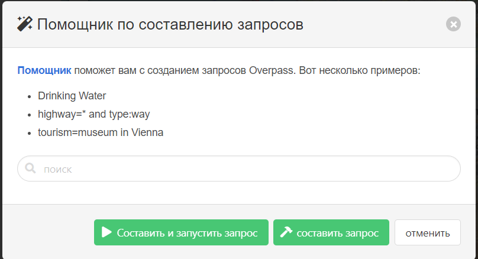
Для примера можно найти и загрузить данные по многоквартирным жилым домам (building=apartments) и основным магистральным улицам (highway=primary or highway=secondary or highway=tertiary, то есть центральные магистрали, основные магистрали районов и основные микрорайонные или межмикрорайонные транзитные улицы) в Санкт-Петербурге.
Первый запрос по поиску жилых домов выглядит примерно так. Обратите внимание, что я убрала пункт node, чтобы у нас не производился поиск точечных объектов.
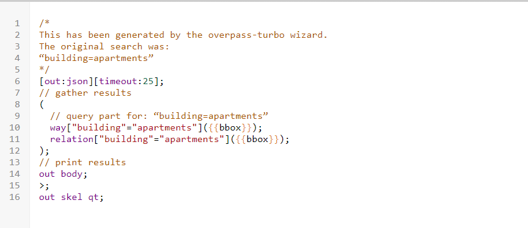
В результате запроса получим объекты на карте.
По умолчанию поиск объектов производится внутри видимой области карты в правой части окна, но с помощью кнопок управления, расположенных в этой части окна вы можете выбрать, например, прямоугольную область поиска.
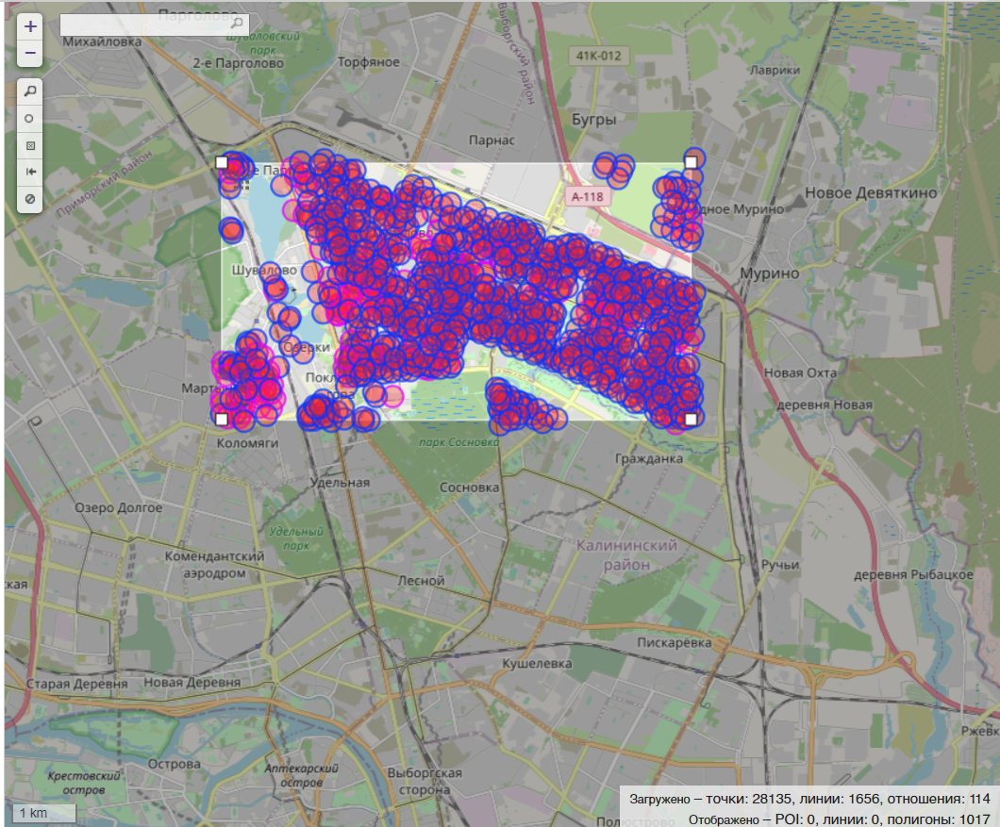
В нижнем правом углу окна видно, сколько объектов какого типа было найдено, а сколько отображено.
Эспортируем результаты себе на компьютер для дальнейшей работы с ними в QGIS. Для этого нужно нажать кнопку Экспорт, после чего появится диалоговое окно экспорта.
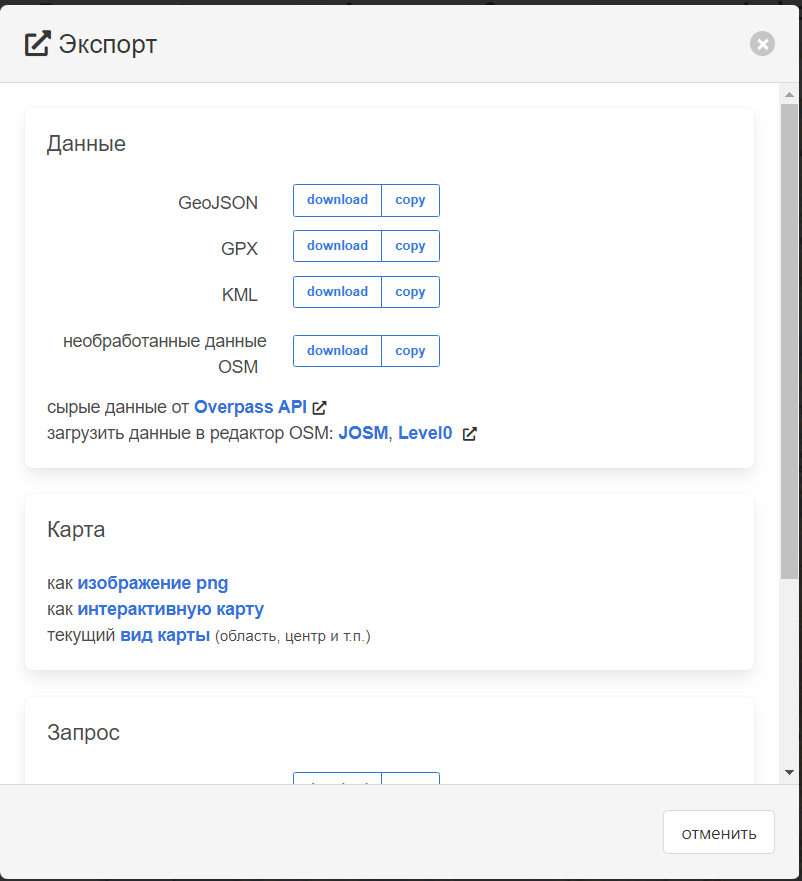
Данные можно сохранить себе в формате geojson, о котором говорилось в предыдущем разделе @ref(formats), кроме этого формата данные также можно скачать в GPX, KML, в виде сырых данных, а также в виде данных для редактирования OSM.
Предварителльно проверим свой файл в сервисе geojson.io.
Здесь достаточно будет просто перетащить ваш файл в правую часть окна. Если с файлом все в порядке и геометрия валидна, то на карте должны отобразиться объекты, а в правой части будет структура geojson файла.
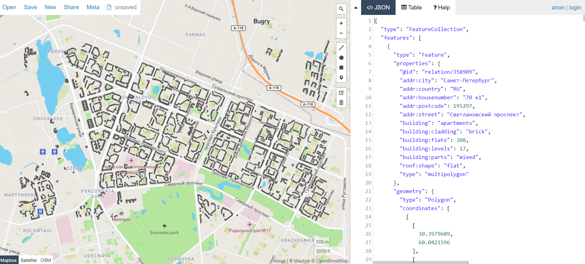
Откроем полученные данные в QGIS.
Добавление слоя осуществляется через строку меню Слой \(\longrightarrow\) Добавить слой \(\longrightarrow\) Добавить векторный слой.
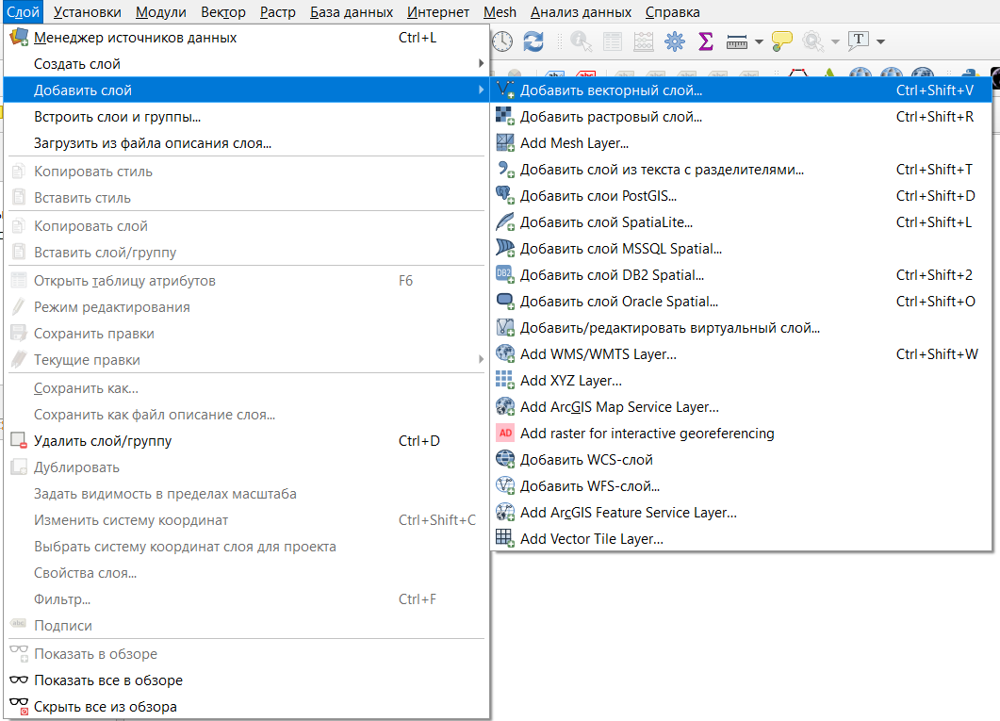
Далее в диалоговом окне нужно указать путь к файлу.

На самом деле не обязательно пользоваться строкой меню и ее пунктом Слой, все то же самое можно делать через окно Браузер в левой части интерфейса. Это скорее вопрос привычки.
Но нужно помнить, что процесс открытия через строку меню более контролируемый.
Если вы открыли новый проект, то в нем нужно выполнить перепроецирование на лету и добавить подложку.
В результате должно получиться что-то подобное.
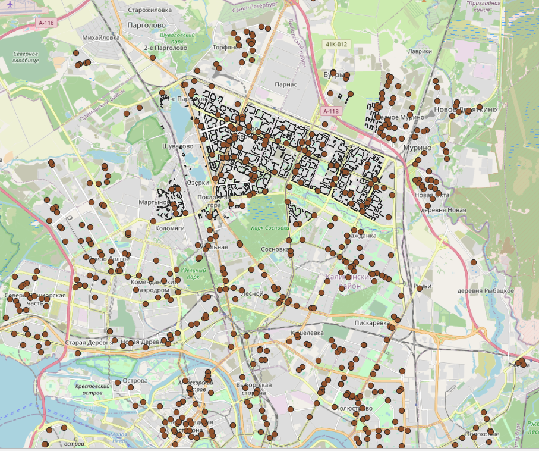

В таблицах атрибутов будет содержаться информация об объектах, которая внесена в OSM.
Открыть таблицу атрибутов слоя можно из контекстного меню, которое открывается правым кликом на название слоя.
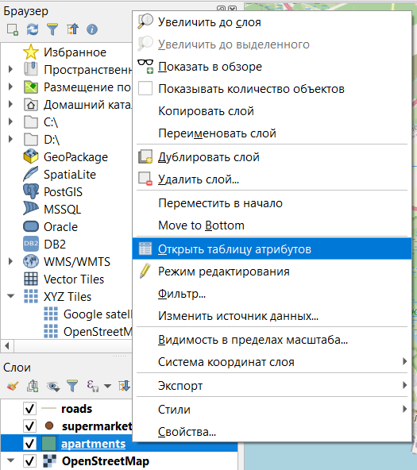
Атрибуты - это те характеристики объектов, которые не являются пространственными.
Таблица атрибутов открывается в отдельном окне.

При необходимости мы можем добавлять и удалять отдельные поля, а также осуществлять операции между полями (об этом чуть подробнее будет на следующих занятиях).
Для добавления и удаления полей нужно включить режим редактирования таблицы в ее панели инструментов (значок  ). После этого в панели инструментов таблицы станут активными кнопки добавления и удаления полей
). После этого в панели инструментов таблицы станут активными кнопки добавления и удаления полей  .
.
При удалении полей следует просто выбрать поля, которые вы собираетесь удалить в перечне (можно выделять сразу несколько названий полей, используя кнопки Shift и CTRL).
При добавлении нового поля обязательно нужно задать его имя и тип данных, которые будут в нем храниться.
1.2 Модуль QuickOSM
Кроме непосредственного использования сервиса можно скачивать данные OSM напрямую из QGIS с помощью модуля QuickOSM.
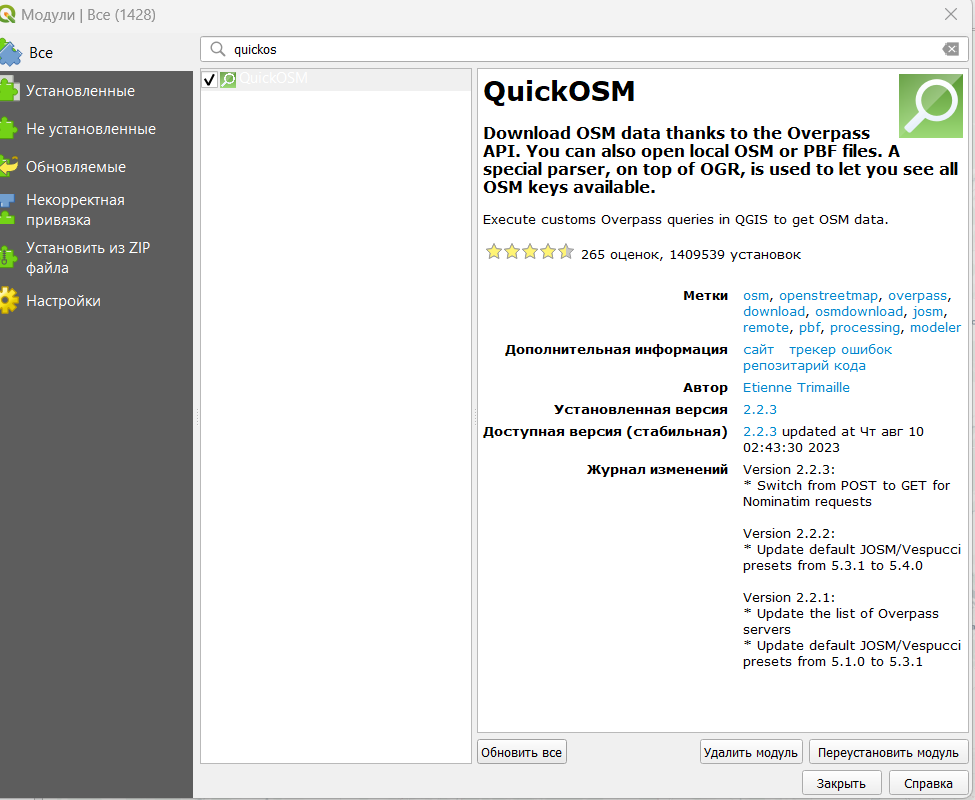
После установки модуля на панели инструментов появятся два значка 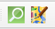, левый из которых запускает окно поиска и загрузки данных из OSM, а правый позволяет удаленно подключаться к редактированию OSM через редактор JOSM2.
Окно модуля по умолчанию открывается на вкладке Быстрый запрос.
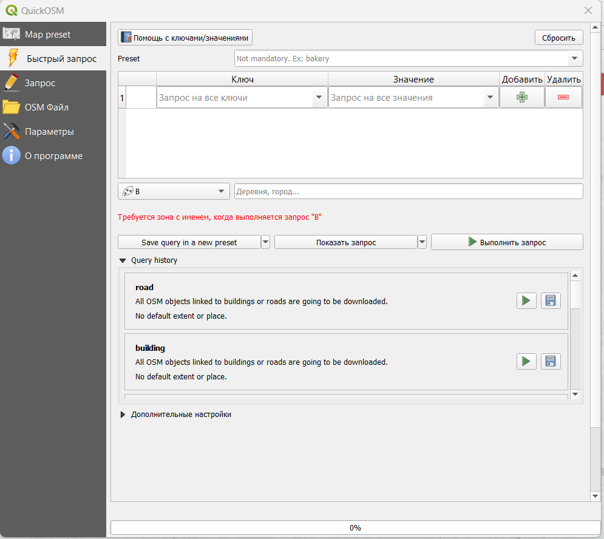
Кнопка Помощью с ключами/значениями открывает страницу с документацией модуля https://docs.3liz.org/QuickOSM/
На второй строке находятся строка выбора пресетов (Preset) - готовый запросов по поиску объектов, поэтому если вы не очень уверены в том, как какие-либо объекты обозначаются, но знаете, какие вам нужны, можно попробовать найти уже готовый запрос здесь.
Сразу под этой строкой находится таблица, где вы можете выбирать конкретные ключи и их значения.
Запрос может включать в себя сразу несколько пар ключ/значение, но в этом случае части запроса должны быть связаны одним из логических операторов AND или OR.
Главное отличие в применении этих операторов состоит в том, что при выборе AND поиск объектов будет осуществляться с учетом того, что все части запроса должны выполняться одновременно.
При использовании оператора OR будет производится поиск объектов, удовлетворяющих хотя бы одному условию из заданных.
Сразу под таблицей необходимо задать область поиска:
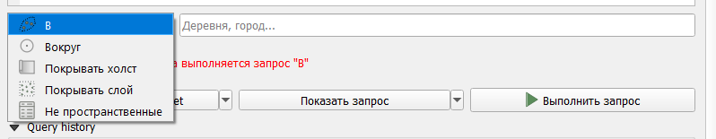
В - поиск в заданном населенном пункте;
Вокруг - поиск в заданном радиусе вокруг населенного пункта;
Покрывать холст - поиск в пределах видимой в основном окне программы части карты;
Покрывать слой - поиск в пределах охвата конкретного слоя (необходимо выбрать нужный слой);
Не пространственные - не заданная конкретная область, поэтому поиск будет производиться во всех данных OSM вне зависимости от местоположения.
Свой запрос вы можете сохранить в виде пресета (Save query in a new preset), просмотреть его (Показать запрос) и Выполнить запрос.
При нажатии на кнопку Показать запрос у вас откроется вкладка Запрос, где текст вашего запроса будет показан на языке запросов Overpass аналогично тому, как было рассмотрено выше.
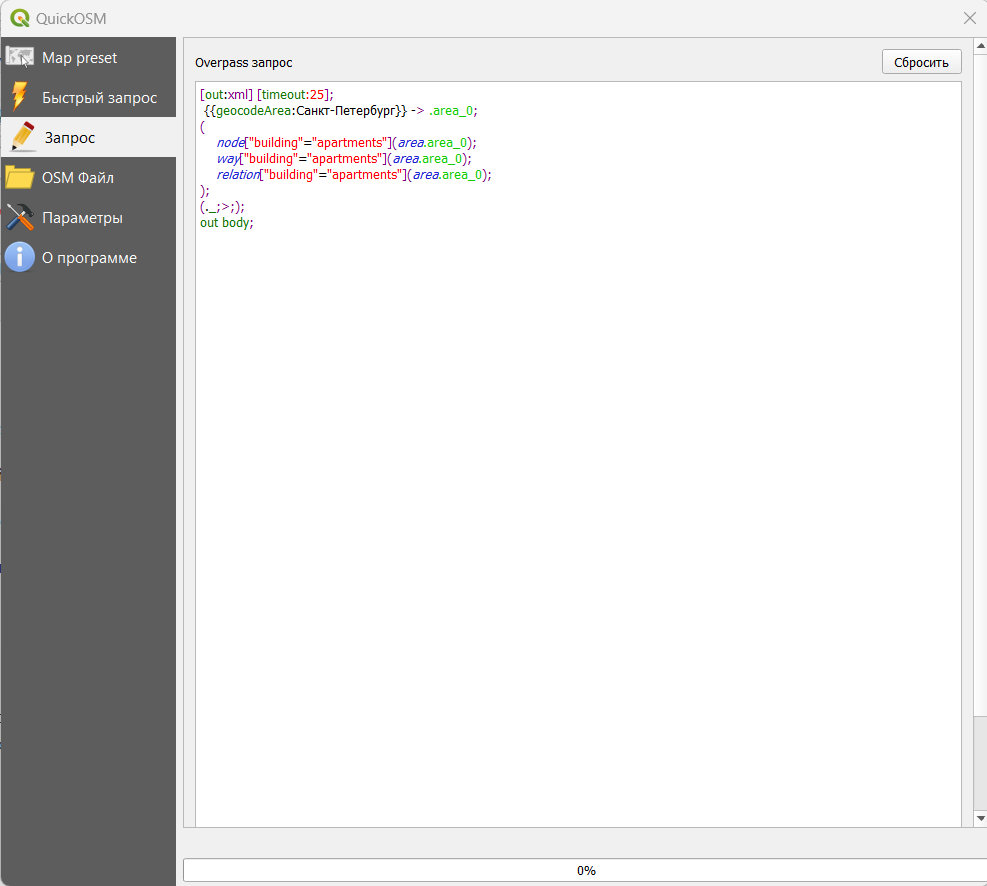
При желании, запрос можно писать прямо здесь.
В пункте Query history на вкладке Быстрый запрос у вас будут отображаться уже сделанные вами запросы.
В дополнительных настройках быстрого запроса можно указать:
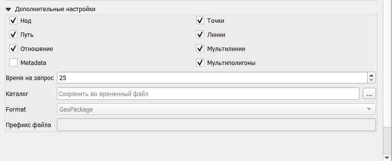
тип объекта для поиска;
время ожидания при выполнении запроса;
путь к папке для сохранения результатов запроса и формат сохранения данных, а также префикс файла для более простой идентификации.
!NB по умолчанию результаты запроса сохраняются во временные слои, обозначенные значком
Эти слои существуют только во время текущего сеанса работы, так что если вы планируете работать с ними далее, то их необходимо сохранить. Сделать это можно, кликнув правой кнопкой мыши на название слоя и выбрав пункт Сохранить на диск или Экспорт \(\longrightarrow\) Сохранить объекты как…
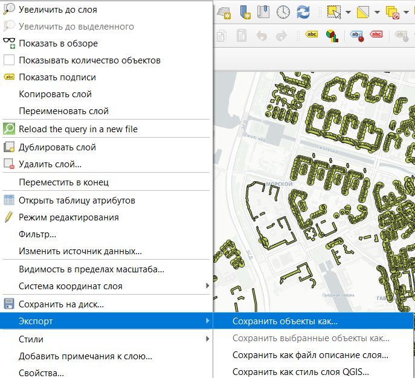
Также обратите внимание, что по одному и тому же запросу могут возвращаться объекты с разными типами геометрии, причем каждый из этих типов сохраняется в отдельный слой.
На вкладке Map preset вы увидите существующий по умолчанию в модуле пресет Urban, а также свои сохраненные в виде пресетов запросы.
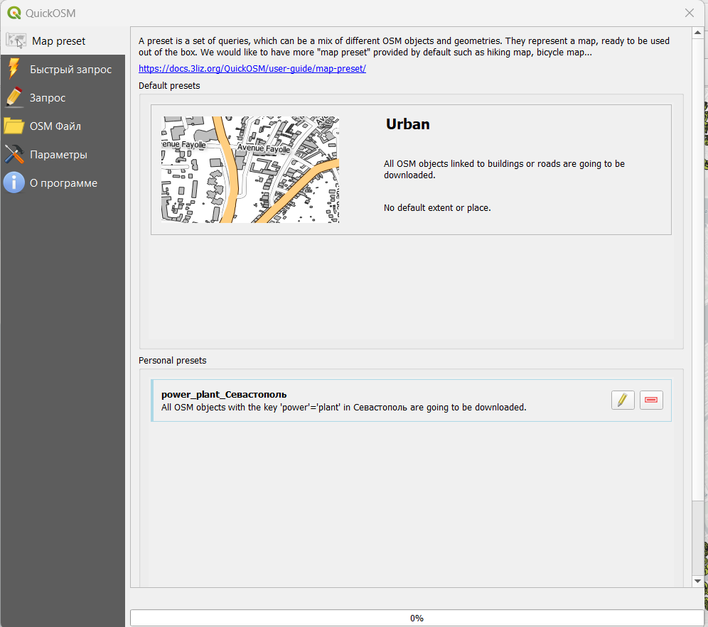
Вкладка OSM файл позволяет загружать сырые данные из OSM для их редактирования.
В Параметрах вы можете выбрать конкретный сервер Overpass для соединения и сервер Nominatim3.
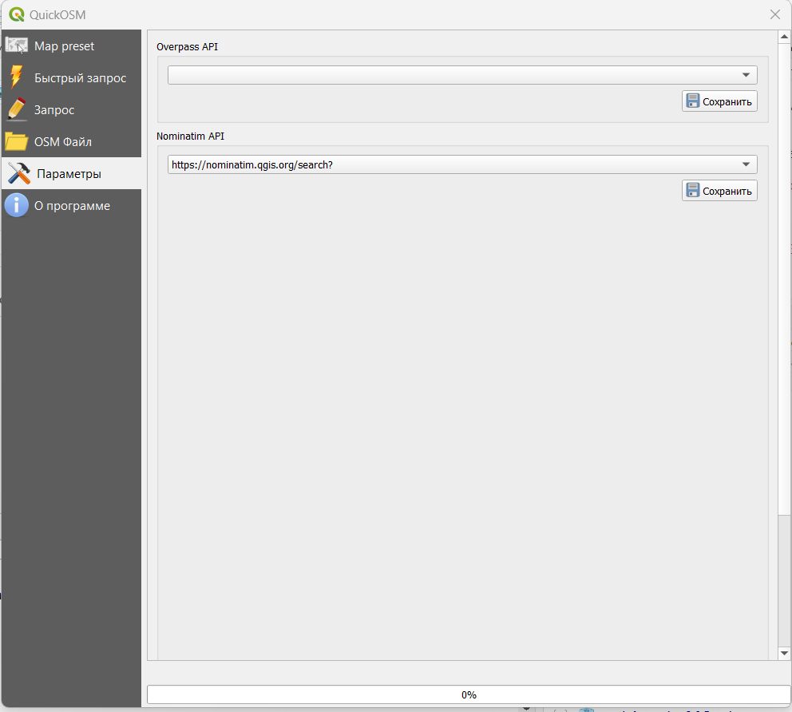
Если запросы осуществляются слишком медленно или не осуществляются вообще, выбор другого сервера может помочь решить эту проблему.
При желании более подробно ознакомиться с логикой построения запросов и языком запросов, вы можете воспользоваться интерактивным учебником https://osmlab.github.io/learnoverpass//en/
Или взять уже готовые запросы из коллекции запросов https://osm-queries.ldodds.com/
1.3 Дополнительно
Кроме непосредственного использования Overpass можно воспользоваться OSM-GPT - сервисом на основе ChatGPT, который позволяет делать запросы с использованием естественного языка.
1.4 Исторические данные OSM
Если вы хотите загрузить не последние актуальные данные OSM, а какие-то исторические, то самым простым способом будет загрузка данных из сервиса Geofabrik - https://download.geofabrik.de/.
На странице загрузки вы можете выбрать интересующий вас регион и скачать данные для него в формате .osm.pbf4 (может быть добавлен в ваш проект как любой другой векторный слой) или .shp.zip (заархивированный shapefile).

Здесь тоже следует помнить, что, если данных не было в OSM ранее, это не значит, что этих объектов не существовало, возможно они просто были добавлены туда позднее.
Единицы территориального деления различного уровня организованы в иерархическую структуру, то есть можно спускаться до необходимого вам уровня детализации региона.

На каждой странице региона вы увидите пункт Other formats and Auxiliary Files, в котором есть пункт raw directory index, позволяющий перейти к архивным данным за определенные даты и загрузить их.

Любознательные и неленивые могут попробовать воспользоваться более продвинутыми инструментами:
Osmium и немного о работе с ним https://habr.com/ru/articles/785254/
OSHDB - OpenStreetMap History Data Analysis (подробное описание и документация)
2 Загрузка данных с Wikipedia и WikiData5
Точно так же, как и OSM эти источники данных весьма несовершенны, поэтому их следует использовать с аккуратностью.
2.1 Поиск по статьям Wikipedia
В Wikipedia есть поиск по статьям, содержащим в себе координаты объектов.
Некоторые примеры запросов, могут быть найдены в документации по ссылке.
Поиск объектов в пределах радиуса 1000 метров от точки с координатами 37° 47′ 13.1″ N, 122° 23′ 58.84″ W:
https://en.wikipedia.org/w/api.php?action=query&list=geosearch&gsradius=10000&gscoord=37.786971|-122.399677Поиск объектов в пределах заданного охвата:
https://en.wikipedia.org/w/api.php?action=query&list=geosearch&gsbbox=37.8|-122.3|37.7|-122.4Для выполнения запроса достаточно просто вставить его в адресную строку браузера.
Основная часть запроса это list=geosearch (gs), остальное уже является дополнительными параметрами для задания определенной области поиска:
gscoord - координаты точки, вокруг которой будет идти поиск (широта и долгота с разделением | );
gspage - название страницы, вокруг объекта которой нужно осуществлять поиск;
gsbbox - охват поиска (координаты левого верхнего и правого нижнего углов с разделением | );
gsradius - радиус поиска в метрах (может быть только целым числом от 10 до 10000, значение по умолчанию - 500);
и некоторые другие, позволяющие более точно настроить поиск.
Для того, чтобы осуществлять поиск только по русскоязычным статьям, достаточно просто заменить в запросе en на ru.
https://ru.wikipedia.org/w/api.php?action=query&list=geosearch&gsradius=10000&gscoord=37.786971|-122.399677Количество объектов, которое возвращается по запросу устанавливается параметром gslimit, но максимальное количество объектов может быть не более 500. Значение этого параметра по умолчанию - 10.
Пример запроса для Москвы:
https://ru.wikipedia.org/w/api.php?action=query&generator=geosearch&redirects=1&prop=coordinates|langlinkscount|info&ggslimit=500&ggsradius=1000&ggscoord=55.75|37.55&colimit=500&format=jsonРезультат показан на рисунке ниже.
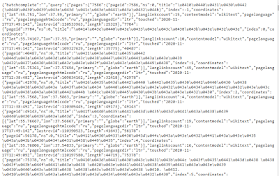
2.2 Поиск по Wikidata
«Викида́нные» (англ. Wikidata) — совместно редактируемая база знаний, созданная Фондом Викимедиа. Используется для обеспечения централизованного хранения данных, которые могут использоваться в других проектах, в том числе в статьях Википедии — например, интервики-ссылок, значков статусных статей и списков или статистической информации: дат рождения, численности населения и т. п.6
Хранение данных основано в виде так называемых утверждений (statements).
Утверждения — это способ хранения любой информации об известном элементе. Формально, они состоят из пар ключ-значение, которые хранят соответствие свойства (например, «автор», или «дата публикации») с одним или несколькими значениями (например, «Артур Конан-Дойл» или «1902»).
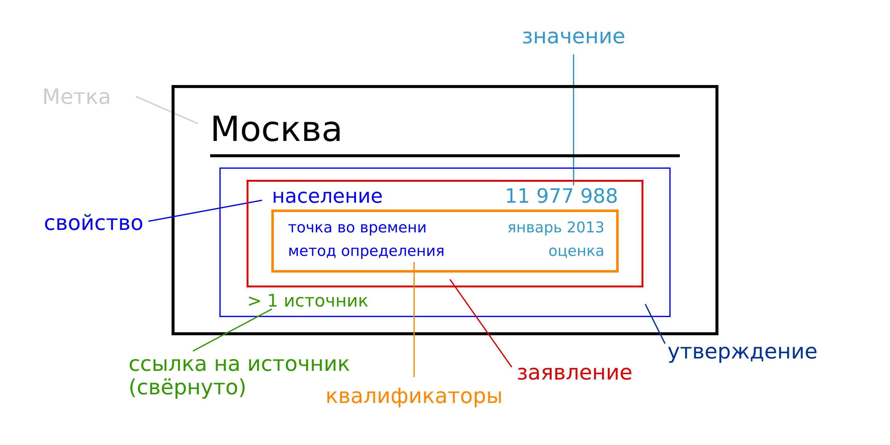
Запросы осуществляются на языке подобном SQL - SparQL7.
С различными примерами составления запросов можно ознакомиться по ссылке.
Пример запроса в заданном радиусе от определенной точки (вы можете попробовать запустить его по ссылке):
SELECT ?place ?placeLabel ?location ?period ?fame ?distance
WHERE
{
SERVICE wikibase:around {
?place wdt:P625 ?location .
bd:serviceParam wikibase:center "Point(37.55 55.75)"^^geo:wktLiteral.
bd:serviceParam wikibase:radius "10". # kilometers
bd:serviceParam wikibase:distance ?distance.
}
?place wikibase:sitelinks ?fame .
OPTIONAL { ?place wdt:P571 ?period }.
# FILTER NOT EXISTS {
# {?place wdt:P31 wd:Q123705 .}
# UNION
# { ?place wdt:P31 wd:Q7553685 .}
# }
SERVICE wikibase:label {
bd:serviceParam wikibase:language "ru" .
}
}Пример запроса в определенном охвате (вы можете попробовать запустить его по ссылке):
SELECT ?place ?placeLabel ?location ?period ?fame
WHERE
{
SERVICE wikibase:box {
?place wdt:P625 ?location .
bd:serviceParam wikibase:cornerSouthWest "Point(37.55 55.70)"^^geo:wktLiteral.
bd:serviceParam wikibase:cornerNorthEast "Point(37.70 55.80)"^^geo:wktLiteral.
}
?place wikibase:sitelinks ?fame .
OPTIONAL { ?place wdt:P571 ?period }.
SERVICE wikibase:label {
bd:serviceParam wikibase:language "ru" .
}
}Кроме того, можете посмотреть подробное видео по работе с Wikidata (англ.) - https://youtu.be/kJph4q0Im98?si=lJLUlJR6s_wEbvbk
или более краткий туториал на русском языке
2.3 Данные об объектах культурного наследния Wikivoyage
Wikivoyage (Викигид http://wikivoyage.org/) - проект по созданию открытого всемирного путеводителя.
Для загрузки данных можно воспользоваться парсером данных, код которого доступен по ссылке.
Либо можно скачать готовую выгрузку по результатам работы парсера по ссылке.
3 Градостроительные данные
К сожалению, в нашей стране отсутствует какой-либо каталог различных порталов градостроительных данных, которые регионы создают самостоятельно, поэтому конкретные данные для нужного региона следует искать на региональных порталах.
Примеры региональных порталов:
Москва https://gisogd.mos.ru/home
Санкт-Петербург https://portal.kgainfo.spb.ru/kgamap
Ленинградская область https://gisogd.lenobl.ru/app/7/layers
Но большинство градостроительных порталов позволяет выгружать данные только в текстовом или растровом виде (в виде картинки), что требует последующей привязки этих растров и векторизации.
В настоящее время есть сервис “Градостроительная проработка онлайн” - https://nspd.gov.ru/urban-analyze
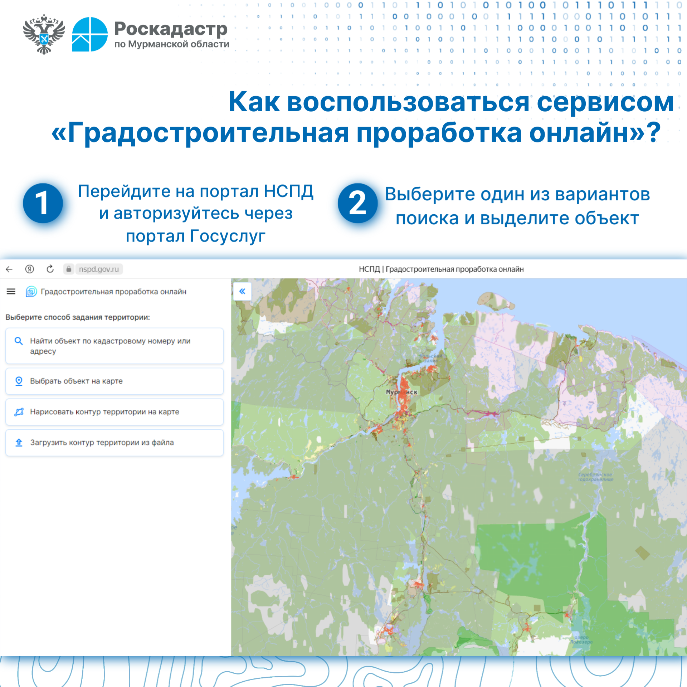
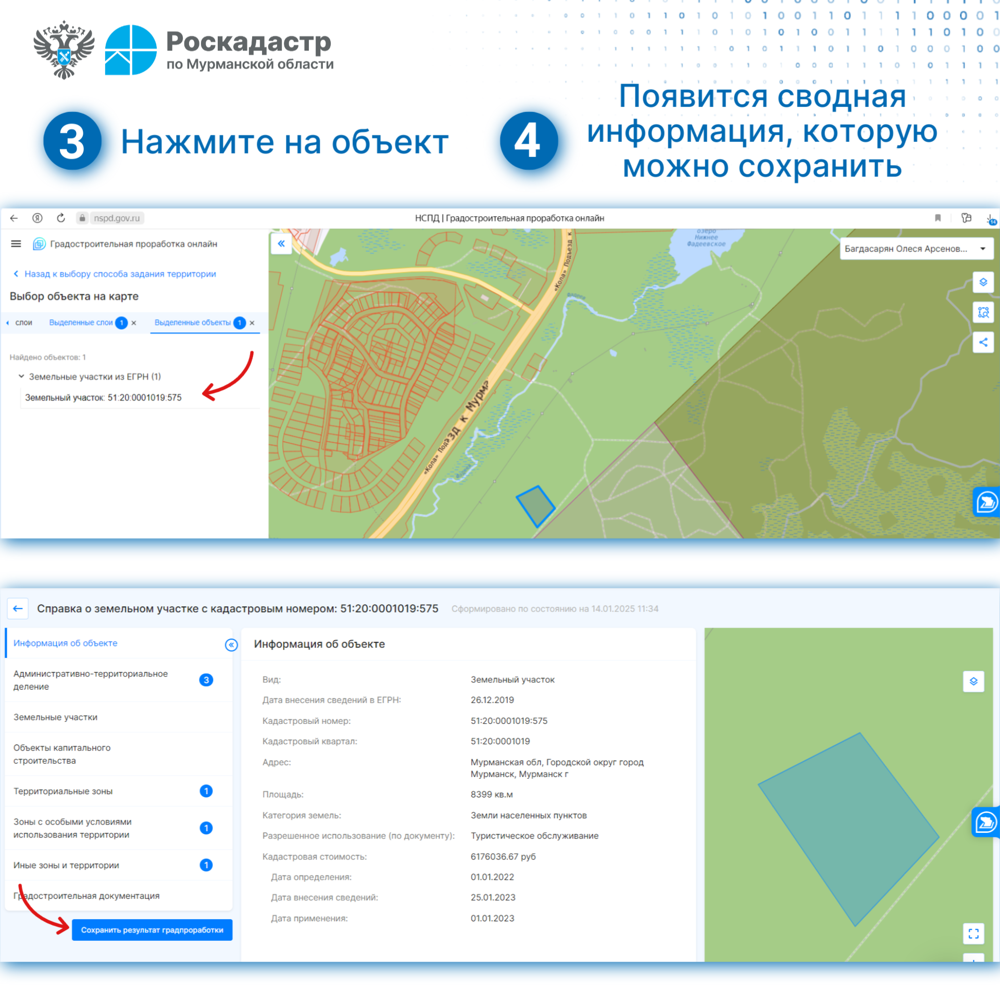
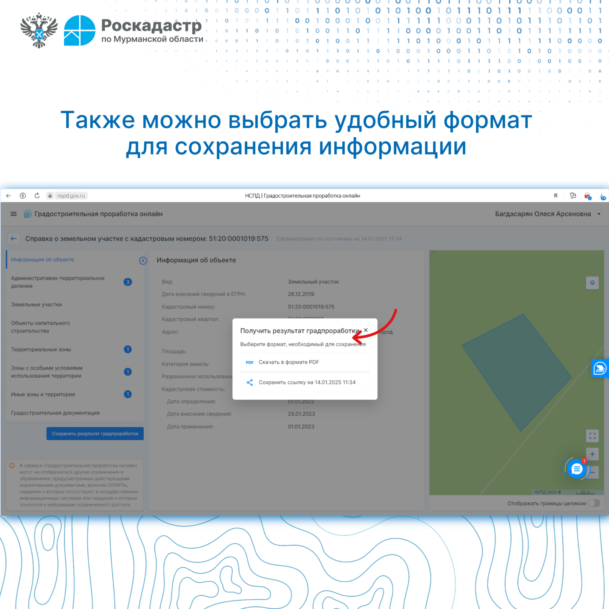
Этот сервис тоже может выдавать данные только в текстовом виде.
4 Данные ЕГРН
4.1 Получение данных Национальной структуры пространственных данных
Показанный ниже метод опирается на не задокументированный доступ через инструменты разработки в браузере.
UPD от 11 апреля: к сожалению, автор видео скрыл их и они более недоступны. Если найду новую версию, добавлю.
Кроме среды разработки полученный результат можно отформатировать, например, онлайн-сервисами JSON Formatter или JSON formatter and validator
4.2 Получение данных из выписок ЕГРН и КПТ
4.2.1 Конвертер xml-файлов
Если у вас есть выписка из ЕГРН на объект недвижимости или кадастровый план территории на кадастровый квартал в формате .xml, то вы можете попробовать загрузить данные из них в QGIS.
Но их загрузка требует извлечения пространственной составляющей (координат характерных точек объектов недвижимости). Самый простой способ конвертации - онлайн-сервис от компании ПолигонПРО:
Конвертер XML-файлов в формат Shapefile https://polygon.top/ws/shp/
Конвертер XML-файлов в формат MIF/MID https://polygon.top/ws/mif/

Полученные в результате конвертации файлы после разархивирования могут быть открыты как обычные векторные файлы.
Полученные координаты будут представлены в местной системе координат для конкретного кадастрового округа, так как используются именно внесенные в ЕГРН данные.
Поэтому дополнительно нужно задать параметры местной системы координат в QGIS.
В каталоге систем координат QGIS содержится порядка 5000 тысяч описаний систем координат, однако иногда их использования недостаточно, тогда вы можете добавить в каталог свою пользовательскую систему координат. Это можно сделать через строку меню Настройки — Пользовательские проекции.
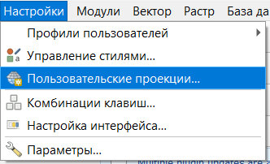
После этого вам откроется окно, в котором можно задать параметры нужной вам системы координат в формате WKT или proj.
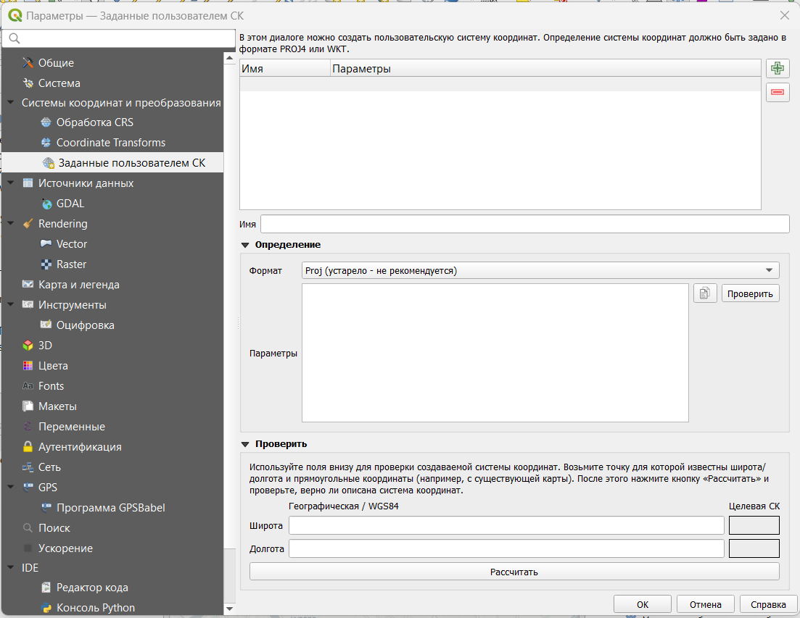
Описание параметров различных систем координат можно найти, например, здесь.

После добавления ваша система координат станет доступна в каталоге как для перепроецирования на лету, так и для перепроецирования слоев в разделе Пользовательские системы координат.
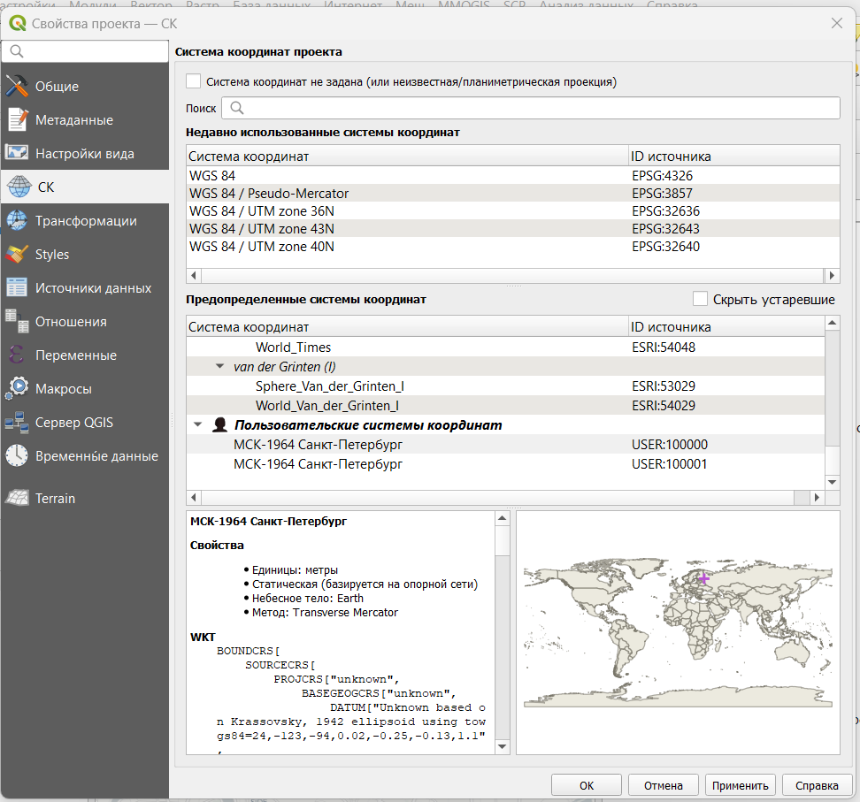
Скорее всего открытый векторный файл будет отображаться в вашем проекте как файл без проекции или с ошибочной системой координат (справа от имени файла будет иконка с вопросительным знаком  ).
).
Для присвоения ему нужной системы координат следует просто кликнуть по названию файла правой кнопкой и выбрать пункт Система координат слоя \(\longrightarrow\) Изменить систему координат слоя (или же выбрать из предлагаемого списка недавно использованных систем координат нужную).

После этого слой будет отображаться на вашей карте должным образом.
Если у вас нет выписки из ЕГРН или кадастрового плана территории, то вы можете скачать их для нужной территории/объектов из Архива КПТ.
Сервис загрузки данных из архива КПТ является платным.
Также следует помнить, что данные загружаются пользователями сервиса и могут быть уже неактуальными.
4.2.2 Конвертация данных ЕГРН
Также конвертацию документов, полученных из ЕГРН позволяет осуществить сервис от компании NextGIS - Конвертация данных ЕГРН.
Преимуществом данного сервиса является то, что он может осуществлять подбор системы координат самостоятельно.
4.3 Подключение национальной системы пространственных данных в качестве подложки
Не проверено лично мной, так что может уже не работать.
В первую очередь необходимо установить на ваш компьютер сертификаты безопасности Минцифры (доступны по ссылке https://www.gosuslugi.ru/crt).
Далее непосредственно в настройках QGIS указать расположение этих сертификатов на компьютере.
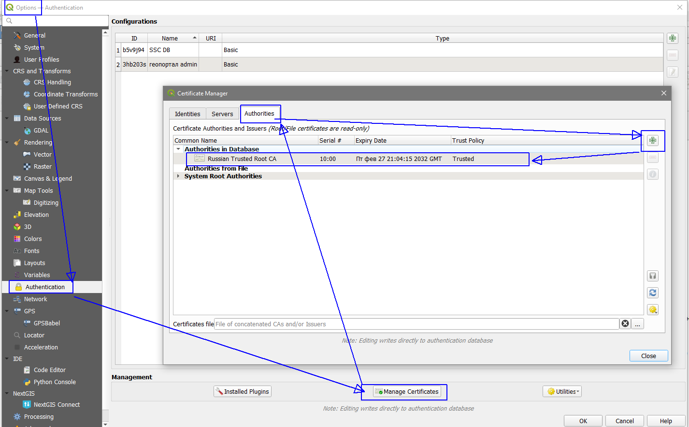
После этого вы можете в панели браузера создать нужное новое подключение к WMS\WMTS сервис, в котором прописать ссылку на соответствующий слой подложки необходимый вам.
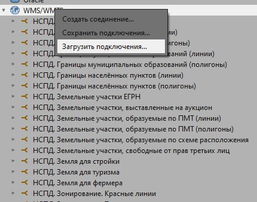
Ссылки на все доступные сервисы можно посмотреть в файле https://disk.yandex.ru/i/m7i1fmjirwWd_Q.
5 Данные федерального фонда пространственных данных
Данные предоставляются только за плату.
Публично-правовая компания “Роскадастр” предоставляет услугу по получению данных из федерального фонда пространственных данных (ФФПД) и сведения единой электронной картографической основы (ЕЭКО).
Основные виды материалов и данных ФФПД:
Первичные и производные материалы и данные дистанционного зондирования Земли (ДЗЗ);
Государственные топографические карты и планы;
Геодезические материалы и данные;
Государственные навигационные карты (планы) для автомобильного транспорта;
Издательские, составительские оригиналы в цифровой форме и тиражные оттиски общегеографических, политико-административных, научно-справочных и других тематических карт, и атласов межотраслевого назначения;
Материалы и данные делимитации, демаркации и проверки прохождения государственной границы РФ и материалы и данные об установлении и изменении границ субъектов РФ и границ муниципальных образований
Справочные и другие материалы.
В состав ЕЭКО входят следующие слои:
рельеф местности с точностью, соответствующей масштабу мельче 1:50 000,
гидрография и гидротехнические сооружения,
растительный покров и грунты (древесная, кустарниковая, травянистая растительность, пашни, болота, прочие земли, пески, каменистые россыпи, нарушенные земли и тому подобное),
дорожная сеть и дорожные сооружения,
населенные пункты,
промышленные, сельскохозяйственные и социально-культурные объекты, в том числе жилые объекты,
государственная граница Российской Федерации,
границы между субъектами Российской Федерации,
наименования географических объектов,
иная информация, не содержащая сведений, составляющих государственную тайну, и являющихся систематизированной совокупностью пространственных данных о территории Российской Федерации.
Ссылка на сервис: https://portal.fppd.cgkipd.ru/main
Инструкция и справка: https://portal.fppd.cgkipd.ru/glavnaia
6 Архивные карты городов
Некоторые архивные карты городов в растровом формате можно найти на сайте https://retromap.ru/select
Архивные карты (примерно до середины двадцатого века) можно попробовать найти на сайте https://geoportal.rgo.ru/collections
Наиболее любознательные могут попробовать поискать архивные карты в фонде картографических изданий РНБ или в каталоге Национальной электронной библиотеки.
7 Дополнительные источники
В качестве дополнительных источников данных можно также использовать:
сведения о точках притяжения от компании Foursquare - Foursquare OS Places(почитать про особенности скачивания данных можно по ссылке);
некоторые социально-экономические показатели в разрезе муниципальных образований можно взять из БД ПМО Росстата (более удобная для работы версия есть здесь: Муниципальная статистика России с 2005 года//Росстат; обработка «Если быть точным», 2024. Условия использования: Creative Commons BY 4.0. URL: https://tochno.st/datasets/bdmo);
Следует учитывать, что в этих данных очень много пробелов
данные об экономической отчетности предприятий есть в Российской базе бухгалтерской отчетности (Bondarkov, Sergey and Ledenev, Victor and Skougarevskiy, Dmitriy. arXiv preprint arXiv:2501.05841. https://doi.org/10.48550/arXiv.2501.05841);
Данные о границах и изменениях муниципальных образований в России для аналитики на внутрирегиональном уровне - https://sberindex.ru/ru/research/dataset-borders-and-changes-of-municipalities (подробнее об этом наборе можно почитать по ссылке).
Footnotes
Overpass API/Overpass QL https://wiki.openstreetmap.org/wiki/Overpass_API/Overpass_QL↩︎
В данном случае этот сервис нужен для осуществления геокодирования, то есть поиска положения населенного пункта по его названию↩︎
подробнее о формате https://wiki.openstreetmap.org/wiki/RU:PBF_Format↩︎
На основе https://gis4arch.blogspot.com/2020/11/wikipedia-wikidata.html↩︎
Источник https://ru.wikipedia.org/wiki/%D0%92%D0%B8%D0%BA%D0%B8%D0%B4%D0%B0%D0%BD%D0%BD%D1%8B%D0%B5↩︎